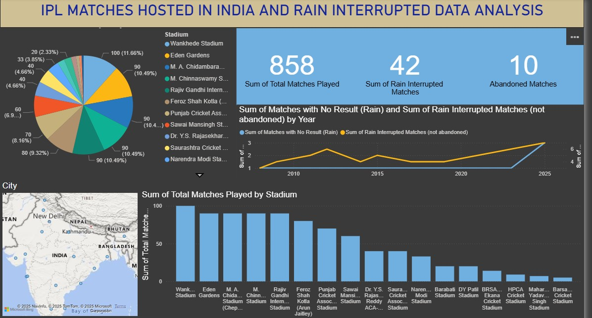
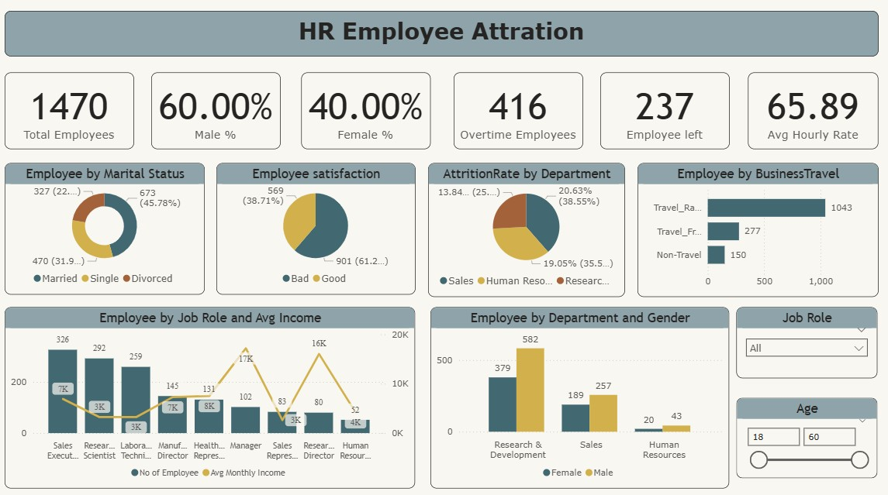
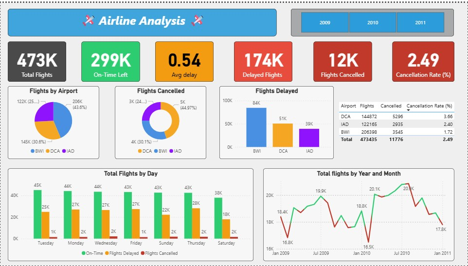
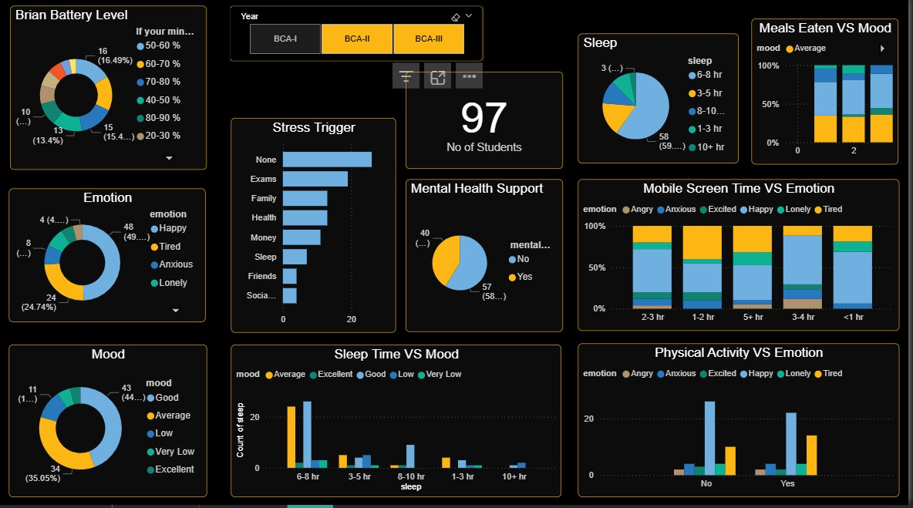

I’m a passionate Data Analyst skilled in transforming raw data into actionable insights. I specialize in data cleaning, visualization, and analysis using tools like Power BI, Excel, SQL, and Python. I enjoy solving business problems through data-driven decisions and creating interactive dashboards that tell clear, impactful stories.
💡 Focus Areas: Data Analytics, Reporting, Dashboarding, Trend Analysis, Predictive Insights
📊 Data Visualization (Power BI, Tableau)
🗄️ SQL & Databases
📈 Statistics & Data Analysis
🐍 Python for Data Science
📑 Excel & Google Sheets

🏏📊 As a cricket fan and aspiring analyst, I used Power BI to explore how rain impacts IPL matches.It taught me real-world data handling, storytelling, and the power of analytics. 🚀

🔍 Built a Power BI HR Analytics Dashboard to explore attrition trends by role, department, gender, overtime, and income with interactive filters. 💡 Applied DAX, custom themes, and data storytelling for clear insights.

Built an interactive dashboard analyzing U.S. domestic flights—covering delays, cancellations, airline-wise trends, and airport performance.🎯 Goal: Provide insights into flight punctuality & airline efficiency using Power BI + Excel.

🎯 Built a Power BI dashboard on Student Mental Health – analyzing sleep, stress, mood, and screen time from 97 students.🌍 Insights aim to support early intervention & promote SDG Goal 3: Good Health & Well-being.
Email: rakeshkumar240607@gmail.com
LinkedIn: rakesh-kumar-02953931
GitHub: RakeshKumar-2007